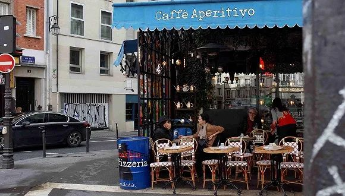

意大利怎么了？
原文链接 备份链接 . 意大利怎么了？ 汪玮Laetitia 03-02 00:27 投诉 阅读数：26311 . 确诊人数过千，死亡人数近30，意大利真的陷入危险了吗？ 越来越多的亲友问我，现在还好吗？ 为了免除一一回复的麻烦，亲 …

记者 ：田思奇
编辑 ：陈升龙
“
在积极克服困难的同时，他们也充当起了信息桥梁的角色。
”
“房东太太叫我们的父母不用担心，因为（我和室友）在意大利这边相对安全。”
中国疫情爆发初期，意大利在1月底被迫取消了中国直飞航班。在托斯卡纳大区留学的张妍不断收到房东太太的邮件，询问中国的疫情，以及她和室友父母在国内的情况。
但让房东太太始料未及的是，意大利疫情的迅猛发展迫使政府在两周内从“封区”到“锁国”。截至北京时间3月23日上午，意大利累计确诊近6万例，病亡率超过9%。
“自由流动的欧洲”长期以来都是欧罗巴大陆引以为豪的理念，但这也让意大利的疫情得以“轻松”扩散到其他国家。在一个月内，欧洲新冠肺炎感染者从不足1000发展到突破12万。西班牙、法国和德国病例早早破万，十多个国家确诊过千。
与此同时，留学欧洲的中国学生们也进入了不同寻常的春季学期。忙于上网课写论文的他们深居简出，也曾在戴不戴口罩，以及哪里买口罩的问题上遇到阻碍。欧洲人的“心大”一度令人困惑，在一部分留学生选择回国之际，也有不少同学对当地政府抱有信心，认为当下最好的做法是原地不动，保持和往日一样的生活。
身处意大利、法国、德国、比利时和瑞典的六位留学生，向界面新闻讲述了各自亲历的“欧式”战疫。在积极克服困难的同时，他们也充当起了信息桥梁的角色。
初始的慌乱感并不属于欧洲当地居民。
2月20日和21日，就读于米兰理工大学的孙小野注意到，意大利本地出现疫情扩散。正值本学期开学前夕，距离她所在的伦巴第大区Mantova校区约1小时车程的小镇确诊16例病例。几天后，学校开始线上授课，持续至今。
在比利时鲁汶居住的李宇婷最后一次去健身房是3月2日。她最初听说有意大利回来的人确诊，但也没有集中隔离。“居家隔离的人接受采访时说自己非常自由，想去哪去哪。听说对于确诊的病人就这样放在家里隔离，也没有任何措施的时候，大家就开始慌了。”
累计确诊病例数超3400的比利时拥有高度自治的三个大区和两种官方语言——法语及荷兰语。据李宇婷介绍，该国为了保护隐私只有三个大区分别公布确诊总数，没有各个城市具体数据。
“我每次出门都觉得风平浪静，好像什么事都没发生，”她说。“我再一回来，打开手机看到这些数字，或者救护车去了哪个学生公寓，我就觉得是真实发生过，但又感觉不到。”
“除了身边的中国人和伊朗人，其他族群就感觉是在另一个世界，”李宇婷感到很困惑。“我会觉得反常的是我，是我反应过度。”
不过，欧洲人的反应“不是因为心大，而是政府没有太多宣传，也就没怎么了解，”在巴黎艺术类院校就读的张旭这样说道。“法国直到3月16日才让大家戴口罩，才说无症状也会传染给别人。民众都觉得是普通流感。”
还有部分北欧人相信，与“一种新流感”相比，气候变化对人类的影响大得多。
在瑞典乌普萨拉大学读博的宋凯常和当地老师讨论疫情，老师表示：“我每年都得普通流感，在家呆三天，大不了我呆四天。”相对来说，宋凯观察到，气候变化、温度升高、整体环境变化可能导致人类灭绝——瑞典的老师更关心这些。
至于瑞典按照欧盟委员会建议从3月19日封锁边境30天的做法，老师也对宋凯强调，这纯粹是迫于外界压力：“德国封了、丹麦封了、挪威封了，周边国家都封了，我们瑞典就得做点什么，要不显得我们什么都没做。”
在东亚国家的疫情防控里，人人戴口罩是最直观的表现。据孙小野观察，中国留学生在意大利只有十几二十例确诊时也戴上了口罩。但这让包括意大利人在内的欧洲人十分不解。
几乎所有接受采访的留欧中国学生都对界面新闻表示，欧洲人坚信有严重疾病时才戴口罩，没有用口罩预防传染的概念。“病毒那么小，戴口罩没用，”一位瑞典老师对宋凯说。
在意大利居住了4年的张妍说：“国内有雾霾时大家都会戴，天气冷了也戴。韩国、日本等亚洲圈子戴口罩都很正常。这就好像只有中国人或者亚洲人才在夏天打伞，但在意大利这边夏天打伞很奇怪。”
张妍还发现，也许欧洲人天生不适合戴口罩。“对他们来讲戴口罩可能是更不舒服的事情，因为人种关系，他们鼻梁都挺高，戴也戴不好，可能口罩还需要改进。”
尽管街上戴的人不多，中国留学生手里还是每人囤了二三十个以防万一。张妍买的普通医用一次性口罩约1.2欧元一个。相对来说，她平时打扫卫生时买的口罩仅0.5欧一个，“这种情况下有就不错了，不会特别计较价格。”
李宇婷也在比利时准备了20个普通外科口罩，但在补货时遇到麻烦。她发现亚马逊上出现卖口罩的骗子：“他说已发货，三天送到，其实根本送不到。再联系卖家就说还要等十几天，但十几天后还是收不到。再一看评论区，所有人都说没收到。”
前后打了三四个客户电话，等待十几天后，李宇婷总算拿回退款。但据她所说：“很多人被骗了也就这样了。”
在巴黎的张旭则在买口罩时历经更多波折。她的第一笔订单理应从德国发货，标价60欧元50个，但德国人隔天打来电话说没货了。后来张旭从新闻里得知德国禁止口罩出口，所以又找了一家法国网站购买“黑色的，很厚的口罩，资质和保质期写得很明白”。然而她收到的是一次性医用口罩，写着湖北仙桃生产，“仅供湖北疫区”。
于是张旭又去巴黎的药妆店买口罩。那家中国人开的药妆店只把口罩和酒精卖给中国人。“店里其他的药都卖给法国人，但如果问有没有口罩，那就是没有，中国人问有没有口罩，就会拿给你。药妆店里卖48欧元/50个，还比法国网站下单这批便宜。”

张旭供图
如果说抢购口罩可以理解，抢购厕纸则成为全世界的未解之谜。
“大家都没有准备，不知道该囤什么，但媒体上报道过囤厕纸（所以大家会买）。而且厕纸又不像食品那么容易坏，囤多了就放个一年半载，心理上有个安慰，感觉到自己也囤了东西，”德国图宾根大学的研究生刘佳对界面新闻分析道。“实际上大家和媒体都解释不清，也不能说德国人多么爱干净。”
不过在历经疫情暴发初期的短暂抢购后，欧洲各国超市的食品供应已恢复正常。
身在鲁汶的李宇婷发现，在酒精和消毒用品被抢光后，比利时人在3月13日疯抢蔬菜、肉类、香肠和厕纸。正是从那天起，比利时全国停课，娱乐性公共活动一律取消，酒吧、餐厅等暂时关门。李宇婷表示，她经常去的亚洲超市供货正常，但若想去市中心的家乐福，一定要在上货时间去，“去得晚就什么都没了”。
李宇婷供图

李宇婷供图
尽管意大利已经“封国”，不得随意外出，但身在托斯卡纳的张妍幸运地享受到了华人超市送货服务。另一个北部城镇的超市每周会来送三趟货，而送货是正当理由，不受意大利封锁限制。学生可以在手机上下单，补充各种新鲜蔬菜。
**
但除了上述情况外，“现在大家出门必须带着‘良民证’，”张妍对界面新闻说。意大利民众需提前写好个人信息，在警察盘查时证明有出门采买和工作的必要性。虽然不能像国内封锁城市这样彻底，但张妍认为意大利已经做得不错。
“米兰那边医院的医护人员三四个礼拜没有好好休息过，我觉得挑战（比我们托斯卡纳大区）更大，”张妍说。“相对来说意大利人的性格比中国人更‘懒懒散散’一些，做事情聊着天那种。不过现阶段他们也绷得很紧，正想办法解决这件事。”
值得一提的是，率先出现疫情扩散的是意大利北部，这里有米兰、威尼斯、佛罗伦萨、都灵等经济重镇和全球性的旅游目的地。“政府很难一下子封锁这些地方，”生活在距离米兰2小时车程的孙小野说。“一直到3月初的时候还有人在酒吧聚集，政府可能害怕民众的抵抗情绪，没有一下子封闭。”
但孙小野发现，意大利政府已通过逐步限制营业时间，限制人流量，一直到最后关闭的过程来让民众一步步接纳“封国”的隔离生活。
刘佳也认为，德国政府已经在能力范围内做得较好，政府和媒体层面的预警很早。“刚出现几例的时候，媒体的报道就很严肃，话里话外都透露出了问题的严峻性，用了很多虚拟语气希望引起大家重视。工作地的卫生间和公共区域多了很多消毒设备。”
这似乎也解释了为什么包括德国在内的欧洲人看似“松懈”。刘佳认为，德国人不会恐惧和紧张，因为信任国家卫生体系。他们也相信政府公布了事项，接下来就会严肃对待。
法国政府的政策细节让张旭感到贴心。“如果医生护士正常上班，国家有专门的地方帮忙照顾孩子让他们放心。针对中小企业的话，店租、水电都是国家全包。出租车和酒店也会优先支持医护人员。而且法国相对人少，只要在家宅着问题不大。”
与此同时，隔离在家的法国人和西班牙人会定时出现在阳台上为医护人员鼓掌欢呼，意大利人则发起大量充满艺术气息的阳台音乐会。
然而孙小野所在的社区老年人较多，似乎不太接受大家一起唱歌的活动。“昨晚我看到隔壁小哥拿出一个凳子、一个小茶几、放上一些红酒和零食，然后一个人听着音乐，坐在阳台上开始喝。结果对面很多老年人就开始关窗户，他们需要休息。”
住在新社区的同学们的确能听到很多人弹吉他、放音乐。据孙小野介绍，居民会在网站上召集中午12点或下午6点开始，因为刚好是公布当天死亡和确诊人数的时间。唱歌也有部分给死者告别的涵义。有一次大家约好唱一首意大利歌曲《但是天空总是更蓝》，向死去的人表达追思。
随着越来越多的欧洲国家加入停课、关闭各大公共场所，甚至严禁随意外出的“封锁”状态，这些学习建筑设计、油画、艺术史和空间艺术的学生课业都遭遇不同程度的阻碍。
即将从油画专业毕业的张妍担心这学期都会泡汤，于是她正在家里准备项目。如果6月份学习恢复正常，仍然举行考试和毕业流程，那么影响就不大。
在德国学习艺术史的刘佳听说，学校的复课时间要推迟到5月。虽然她目前只需写论文，但图书馆关门后她也不方便查资料。“德国很多书没有电子化，一些孤本的书只能在图书馆看，不外借，所以有点麻烦。”
上网课之余，身处疫情中心伦巴第大区的孙小野加入了名叫“四十日谈”的志愿小组。这个名字融合了14世纪黑死病的两个梗，包括当时的隔离时间“四十日”和以该时代为背景的薄伽丘短篇小说集《十日谈》。
“我们想做一个沟通的媒介，尽量去从客观角度跟大家解释形势，把意大利这边的新闻或者信息传递到国内，把国内的东西再发到这边Facebook、推特上，”孙小野介绍说。小组有30人左右，以在意大利的留学生线上合作为主。组内有人负责翻译、撰文、视频制作或公关媒介，还会针对具体工作成立项目小组。
巴黎的张旭仍以手头的项目为主。她需要留在当地查阅文献资料，看艺术家纪录片等，这成为她目前不回国的理由之一。和许多其他留学生一样，张旭还担心飞机上的交叉感染，也认为不要回去给祖国“添乱”比较好。从每阶段总统马克龙的讲话，和真实透明的确诊数据来看，张旭对法国政府的疫情应对也很有信心。
人在比利时的李宇婷还在观望疫情发展来决定是否回国。但她相信“回去是在添麻烦”。她的一位同学航班取消好几次后终于回国，十几个小时戴着口罩全程没吃喝。接站的同省工作人员给带了面包和水，又派车把同学送到高铁站。
“一路上听着就很麻烦，但又很感人，”李宇婷说。“但是你又能听出来，就因为这一个人你就给他派车，有专门的人在高铁站接待他，其实让那边的人工作量特别大。”
托斯卡纳的张妍一度被母亲建议关注中国撤侨的信息，但她认为这不现实，因为意大利有多达30万华人。“国家能给意大利（援助）物资，派人过来指导已经很好了，毕竟国内的情况也是刚刚稳定下来。我们也不是学医学方面的，没办法做特别大贡献。就都先安稳下来，好好过自己的生活。”
在瑞典生活环境空旷的宋凯打算开始在家办公。如果天气好的话，他会在下午推着婴儿车带9个月大的女儿出门散步。“我家旁边是有森林的保护区，根本不会碰到人。如果疫情再严重，大不了我后门打开，不跟人接触，家里存粮吃个一二十天没问题，反正我们家不跟别人接触，就是安全的。”
（应受访者要求，张妍、李宇婷、张旭和孙小野为化名）
未经授权 禁止转载

原文链接 备份链接 . 意大利怎么了？ 汪玮Laetitia 03-02 00:27 投诉 阅读数：26311 . 确诊人数过千，死亡人数近30，意大利真的陷入危险了吗？ 越来越多的亲友问我，现在还好吗？ 为了免除一一回复的麻烦，亲 …
原文链接 备份链接 我不太确定学校停课的时间会不会继续延长。因为我们在群里对此次意大利疫情的预测是不太乐观的。 记 者 | 应 琛 受访者 | 王艺林 上午在宿舍自习完之后，我习惯性地打开新闻网站了解当天意大利新冠肺炎疫情的最新情况。我 …
原文链接 备份链接 “Dio ha scelto di stare dalla nostra parte.” ********************** 在2月21日之前，意大利新冠肺炎确诊病例仅有3例。然而截至当地时间3月10日，意大 …
原文链接 备份链接 意大利的新冠肺炎疫情，在亚洲之外最为严重。 截至2月29日，意大利累计确诊新冠病毒肺炎感染病例1128例，累计死亡29例。该国最早的确诊病例出现在1月30日，是一对来自武汉的夫妻游客。直到2月21日，确诊人数仍仅为3 …
原文链接 备份链接 国内多地周一重现早高峰。国际奥组委确认正式考虑延期举办东京奥运会。疫情令美国经济处在悬崖边缘。意大利对中国专家组的建议照单全收。 文 |《财经》数据研究员 徐进 图 |《财经》视觉中心 编辑 | 郝洲 一、国内多地 …